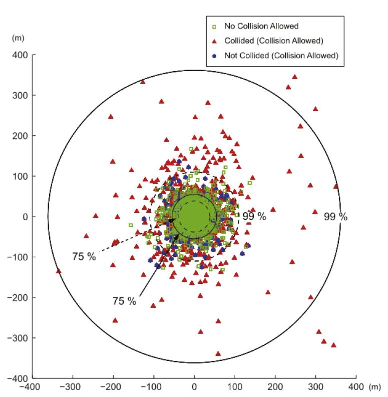

Лабораторная работа №2. Дискретно-событийное моделирование на примере задачи вулканической баллистики#
Цель работы - закрепить знания и получить опыт решения физической задачи путём компьютерного моделирования с применением дискретно-событийного подхода.
Описание задачи#
Смоделировать процесс разлёта камней из кратера вулкана при его извержении, получив в результате координаты точек падения камней на горизонтальную плоскость \(z=0\). Пространство трёхмерно, оси \(Ox\) и \(Oy\) лежат в горизонтальной плоскости, ось \(Oz\) направлена вертикально вверх.
Используйте дискретно-событийный подход к моделированию извержения. В этом может помочь библиотека SimPy.
Процесс извержения характеризуется следующими параметрами:
\(R_{\rm c}\) - радиус кратера;
\(D_{\rm c}\) - глубина кратера;
\(H > 0\) - высота кратера над горизонтальной плоскостью;
\(\mu_v\) и \(\sigma_v\) - параметры нормального распределения величины скорости камней: \(v = \|\vec v\| \sim \mathcal{N}(\mu_v, \sigma_v)\), где \(\vec v\) - вектор скорости камня;
\(\varphi \in [0, 2\pi]\) - диапазон разлёта бомб по углу азимута;
\(\mu_\theta\) и \(\sigma_\theta\) - параметры нормального распределения угла возвышения (наклона к горизонту) вектора скорости камней: \(\theta \sim \mathcal{N}(\mu_\theta, \sigma_\theta)\);
\(R_{\rm min}\) и \(R_{\rm max}\) - минимальный и максимальный радиусы бомб. Распределение величины радиуса камня - равномерное;
\(\rho\) - плотность материала камней;
\(\beta_{\rm erup}\) - среднее время между выбросами камней при извержении. Случайная величина временного промежутка между выбросами \(\Delta t_{\rm erup}\) распределена по экспоненциальному закону с параметром \(\beta_{\rm erup}\).
При извержении новые бомбы (камни) добавляются в список flyings (летящие).
При приземлении камень убирается из списка flyings и добавляется в список приземлившихся fallens (упавшие).
Задачи работы:
Создать компьютерную модель процесса извержения вулкана. Реализовать возможность моделирования с учётом и без учёта столкновения между камнями.
Составить отчёт по лабораторной работе (ЛР). Требования к отчёту см. во введении. Привести значения параметров (исходных данных и пр.) модели, полученные результаты в виде графика аналогичного графику, показанному на лекциях, а также проанализировать полученные результаты.
Методические указания#
Модель камня (бомбы)#
Бомба имеет форму шара радиуса \(R\), массу \(m = \rho V = \rho \cdot \frac{4}{3} \pi R^3\). Её положение и движение описываются радиус-вектором \(\vec{r}(t)\) и вектором скорости \(\vec{v}(t)\) соответственно.
Класс камня может иметь флаг is_collided, указывающий на то, сталкивался ли камень (True) или нет (False).
Это пригодится на этапе обработки результатов.
Модель извержения (разлёта камней)#
Траектория каждого камня описывается законом движения свободно падающего тела:
где \(\tau\) - собственное (относительное) время камня: \(\tau = t - t_{\rm b}\) и \(0 \le \tau \le t_\mathrm{g}\); \(t\) - глобальное время: \(t \ge 0\); \(t_{\rm b}\) - глобальное время извержения камня; \(t_\mathrm{g}\) - глобальное время падения камня на землю; \(\vec g = (0, 0, -9.81)\) м/с\(^2\) - вектор ускорения свободного падения.
Этот же закон можно записать и в глобальном времени \(t\):
Извержение#
Процесс извержения характеризуется
средним временем между выбросами \(\beta_{\rm erup}\) и
числом \(N > 0\) выбрасываемых при этом камней.
Случайная величина времени между двумя соседними выбросами \(\Delta t_{\rm erup}\) распределена по экспоненциальному закону с функцией плотности вероятности
При выбросе (при событии ERUPTION):
Генерируется \(N\) новых бомб.
Рассчитывается абсолютное время \(t_{\rm g}\) их падения на землю, т.е. достижение высоты \(z=0\).
Для каждой новой бомбы рассчитывается ближайший момент времени \(t_{\rm col}\), когда она столкнётся с любой бомбой из списка
flyings.После этого новая бомба добавляется в список
flyings.
Столкновение#
При столкновении двух бомб \(B_1\) и \(B_2\) (при событии COLLISION):
Очищается очередь событий, связанных с бомбами \(B_1\) и \(B_2\).
Обновляются векторы начальных скоростей \(\vec v^{B_1}_0\) и \(\vec v^{B_2}_0\) и радиус-векторы начального положения \(\vec r^{B_1}_0\) и \(\vec r^{B_2}_0\) бомб \(B_1\) и \(B_2\).
Пересчитываются времена падения \(t^{B_1}_{\rm g}\) и \(t^{B_2}_{\rm g}\) бомб \(B_1\) и \(B_2\).
Пересчитываются моменты времени столкновения \(t^{B_1}_{\rm col}\) и \(t^{B_2}_{\rm col}\) бомб \(B_1\) и \(B_2\) с другими камнями из списка
flyings.
Момент столкновения камней#
Камни \(B_1\) и \(B_2\) сталкиваются, если расстояние между их центрами равно сумме их радиусов \(R_1\) и \(R_2\), т.е.
При численном решении данного уравнения определяется момент столкновения камней \(t_{\rm col}\). Способы численного решения уравнений в Python можно найти в справочнике.
Note
Уравнение столкновения является обычным квадратным уравнением, поэтому его можно решить аналитически. Только итоговая формула будет громоздкой.
Расчёт скоростей после столкновения#
Скорость сближения (closing) тел в момент удара
где \(\vec{n}\) - вектор единичной нормали при столкновении:
Скорость разлёта (separating) тел до столкновения
и после него
где \(c\) - коэффициент восстановления: \(0 \le c \le 1\).
Изменение скорости при ударе:
Вектор полного импульса:
Следовательно, исходя из закона сохранения импульса, возможно рассчитать скорость каждого тела после столкновения:
Приземление#
При приземлении камня (событие GROUND):
Очищается очередь событий, связанных с этим камнем.
Камень переносится из списка
flyingsв списокfallens.
В конце симуляции координаты упавших камней берутся из массива fallens и отображаются на графике, а именно, на виде сверху.
Начало системы отчёта располагается в центре кратера.
Шаблон кода#
Предлагается создать программу моделирования на основе библиотеки для дискретно-событийного моделирования SimPy. Основы написания программ с её использованием вы найдёте в справочнике.
Подключим необходимые и/или полезные библиотеки:
from numpy.random import default_rng
from scipy.optimize import root_scalar
from typing import Dict, List
import matplotlib.pyplot as plt
import numpy as np
import simpy as sim
Класс бомбы:
class Bomb:
def __init__(self,
t_erup: float,
r0: np.ndarray,
v0: np.ndarray,
mass: float,
radius: float):
self.t_erup = t_erup
self.r = r0
self.v = v0
self.m = mass
self.R = radius
# TODO: + ваши поля, которые посчитаете нужным использовать
...
def calc_r(self, t: float):
"""Рассчитать радиус-вектор в момент времени `t`."""
pass
def calc_v(self, t: float):
"""Рассчитать вектор скорости в момент времени `t`."""
pass
def is_collided(self):
"""Столкивался ли камень."""
pass
def xy_fall(self):
"""Координаты точки падения."""
pass
Глобальные списки летящих камней и камней на земле, а также словарь (хэш-таблица) процессов каждого экземпляра бомбы:
flyings, fallens = [], []
processes: Dict[Bomb, List[sim.Process]] = {}
Note
Запись processes: Dict[Bomb, List[sim.Process]] означает, что мы объявляем словарь, ключи которого имеют тип Bomb, а значения - тип sim.Process (процесс в SimPy).
Important
Ключи для словарей должны быть хешируемыми, т.е. уникальными.
В классе Bomb нет реализации функции __hash__, но она и не нужна.
За уникальность экземпляров Bomb отвечает адрес памяти, в которой каждый конкретный экземпляр хранится.
Генератор псевдослучайных чисел инициализируется, например, так:
rs = Generator(PCG64(seed=2103))
Note
Подробнее о генераторах псевдослучайных чисел можно почитать в справочнике.
Генераторная функция (функция-процесс) выброса камней при извержении:
def eruption(env: sim.Environment,
dt: float,
n: int,
rs: Generator):
"""Процесс (в терминах SimPy) выброса камней.
env :
Объект среды SimPy,
отвечающий за управление и обработку событий.
dt :
Время между выбросами.
n :
Число выбрасываемых камней.
rs :
Генератор чисел.
"""
# Ожидание события ERUPTION...
yield env.timeout(dt)
# и вот оно наступило.
# TODO: действия при наступлении события ERUPTION
...
Всего таких процессов при моделировании \(N_{\rm erups}\).
Функция генерации камней:
def gen_bombs(env: sim.Environment,
n: int,
rs: Generator):
"""Сгенерировать `n` бомб (камней).
env :
Объект среды SimPy,
отвечающий за управление и обработку событий.
n :
Число выбрасываемых камней.
rs :
Генератор чисел.
"""
pass
Функция-процесс, описывающая действие при наступлении события COLLISION:
def collision(env: sim.Environment, dt: float, b1: Bomb, b2: Bomb):
"""Процесс (в терминах SimPy),
происходящий при наступлении события COLLISION.
env :
Объект среды SimPy,
отвечающий за управление и обработку событий.
dt :
Задержка начала процесса.
b1 и b2 :
Бомбы.
"""
try:
yield env.timeout(dt)
# TODO: действия при наступлении события столкновения
...
except sim.Interrupt:
return
Функция очистки очереди событий, связанных с бомбой b:
def clear_queue(b: Bomb):
for proc in processes[b]:
try:
proc.interrupt()
except RuntimeError:
continue
Функция расчёта времени падения камня на землю (\(z=0\)):
def when_ground(b: Bomb):
pass
Функция расчёта скоростей бомб b1 и b2 после их столкновения в момент времени t:
def calc_collision(t: float, b1: Bomb, b2: Bomb):
pass
Функция расчёта момента времени столкновения \(t_{\rm col}\) камня b1 с камнем b2:
def when_collision(b1: Bomb, b2: Bomb):
pass
Функция-процесс моделирования извержения:
def simulate(env: sim.Environment,
n_erups: int,
allowed_collisions: bool):
"""Процесс моделирования.
env :
Объект среды SimPy,
отвечающий за управление и обработку событий.
n_erups :
Число выбросов.
allowed_collisions :
Столкновения учитываются (True) или нет (False).
"""
pass
Экземпляр среды SimPy должен создаваться единожды и передаваться во все функции, в которых он требуется. Инициализация среды происходит просто:
env = sim.Environment()
Таким образом, создав экземпляр sim.Environment, вы вызываете функцию simulate(...) с заданными вами параметрами.
Она в свою очередь инициализирует все необходимые процессы и запускает симуляцию внутри SimPy путём вызова env.run().
Визуализация#
Универсальная функция визуализации точек падения камней:
def top_view(xy: np.ndarray, ax=None, **kw):
if ax is None:
_, ax = plt.subplots()
marker = kw.get("marker", ".")
color = kw.get("color", "k")
label = kw.get("label", "")
alpha = kw.get("alpha", 1.)
ax.plot(xy[:, 0], xy[:, 1],
ls="", marker=marker, c=color, alpha=alpha, label=label)
return ax
Пример итогового графика показан на рисунке ниже:

Рекомендации#
Используйте функции
saveи/илиsavezбиблиотеки NumPy для сохранения точек падения. В этом случае вам не нужно будет хранить все полученные данные в оперативной памяти. После моделирования вы сможете читать данные в другой части кода, отделённой от той его части, которая отвечает за моделирование.Решить уравнение встречи бомб можете численным методом
root_scalarиз библиотеки SciPy.Используйте библиотеку дискретно-событийного моделирования
SimPy, чтобы не изобретать велосипед. Основы использования SimPy приведены в справочнике. Либо реализуйте программу согласно псевдокоду с лекции по теме дискретно-событийного моделирования.
См. также#
Основы генераторов и итераторов приведены в справочнике.
Библиотека фреймворка дискретно-событийного моделирования SimPy.
Численное решение уравнений можно найти в справочнике. Там же содержится информация по построению графиков.
Требования к отчёту см. в разделе “Актуальная информация” в группе кафедры и во введении.